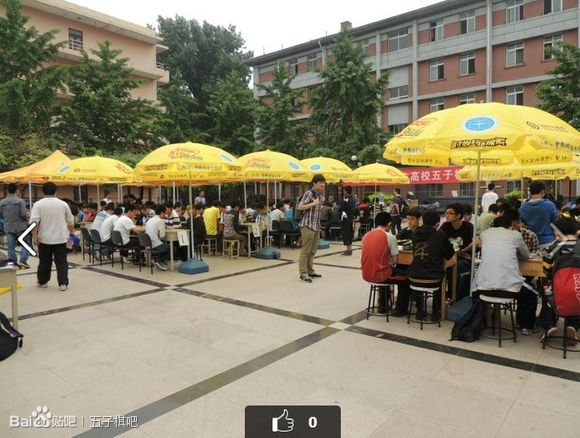
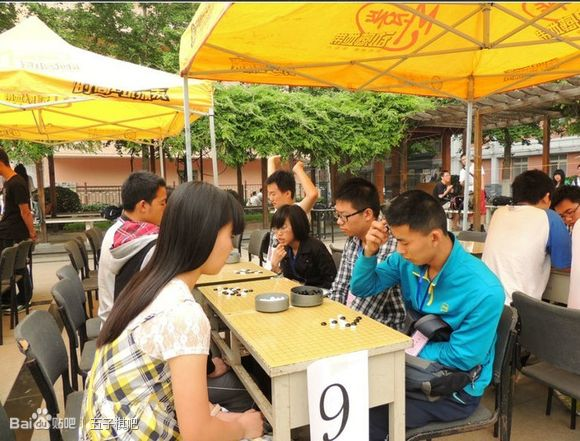
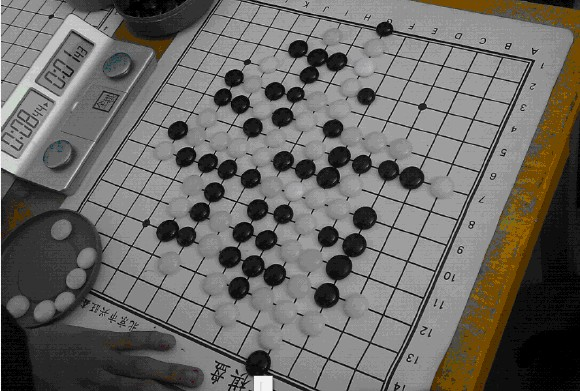
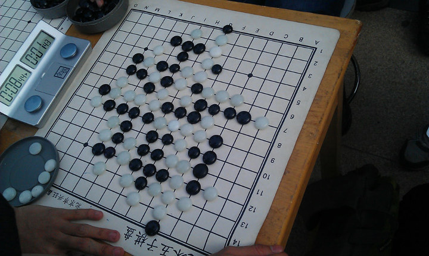
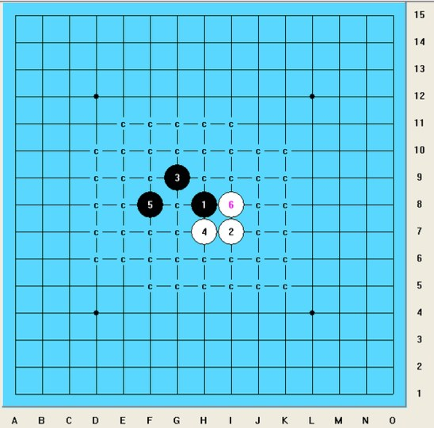

增加附件（限制:500.00 KB）】后面的“ ”按钮，选择电脑中的图片，然后点击“上传”即可。当然图片的大小不能超过500KB。
增加附件（限制:500.00 KB）】后面的“ ”按钮，选择电脑中的图片，然后点击“上传”即可。当然图片的大小不能超过500KB。原文最早载于百度五子棋贴吧：http://tieba.baidu.com/p/2339825692，转载请注明出处。
比赛的背景我就不过多说明了，总而言之就是：我们完全是临时拼凑出来的一支队伍，1台和4台完全不知道开局，赛前也没怎么补习相关的知识，也几乎没有做什么准备工作。倒是我和wind之间赛前还经常互相下下棋，热了热身。比赛前一天，因为1台选手的执意要求，我最终只能打2台。
就结果而言，不管怎么说，我们这次比赛的参加也算是弥补了近年来清华大学无代表队参加北京高校五子棋赛的空白吧。而最终团队能在最后一轮大逆转拿到一个三等奖也算是意外之喜了吧。
下面将专注于自己的六盘棋（有一轮轮空）进行总结分析，毕竟这次比赛暴露出自己不少的问题，还需要在今后不断改进。
第一轮：北京联合大学1：3清华大学 （1台负，2台胜，3台胜，4台因对手弃权胜）
2台：我（执黑） 胜 北京联合大学 王也（执白）疏星局 不换 5A=17
这盘棋可以说是我参加五子棋正式比赛的第一盘棋，所以下得还算是比较谨慎，毕竟我也不清楚对手的底细（赛前聊天中对手透露自己是北京联合大学的第3名）。
所以我开出了比较稳妥的疏星。第一个意外是对手留下了一打，第二个意外是对手竟然走了一个莫名的白6，第三个意外是我这盘棋还在考虑打点问题时我们的1台已经败下阵来叫裁判过来签字了…
黑9后白10唯一，黑11后白12强防，已经试探出对手实力不强，于是我也可以比较随意的做棋。但其实黑13必败，白14-15必胜！但限于对手实力，对手没有做出相应的反击，却因此隐藏了我开局试探出对手实力不强后想一口吃掉对手而不注意控制的轻敌的问题，这个问题最终还是在第三盘棋中受到了相应的惩罚，那盘棋可以说是我整届比赛中最不应该也是最遗憾最令我郁闷的一盘棋了，可以说是一次惨痛的教训吧。
第二轮：清华大学0.5：3.5北京交通大学2队（1台负，2台负，3台和，4台负）
2台：北京交通大学2队徐建鑫（执白） 胜 我（执黑） 新月局 交换 5A=12
第一轮的胜利并没有让我们高兴很久，因为作为鱼腩的我们因为第一轮的胜利，直接在第二轮遇上了冠军队伍，在第一轮中4：0横扫全团赛冠军首师范队的北京交通大学2队。
赛前就听小迪说我的对手实力很强，甚至可能在他之上，后来才知道原来小迪也和我的对手说了我的实力也很强= =但其实这盘棋就内容而言真的很无语。
长考3分钟，我的对手在故意等到其它台次都开始后，开出了我并不熟悉的新月局，也算是打乱我的节奏的一种策略吧。其实自己对于新月局的理解也就仅仅停留在自己赛前和@wind2323下的那几盘有效局以及@该用户名被屏蔽师兄的【桂】棋谱上。在简单回忆了定式后，我选择了交换。赛后我的对手说，他这么开局是想骗我不知道新月的两个打点= =
双方均正确弈至第10手后，因为@wind2323和我下的那几盘新月他都没走这个唯一而正确的白10，以及@该用户名被屏蔽师兄的【桂】棋谱里面也仅仅做到第10手，导致我对于新月局后面的走法的了解可谓一片空白。很快的，黑11不好（不知道是不是必败），黑13已经必败，而且对手明显对这个变化非常熟悉，不假思考就找到了必胜的白14。即便是已经必败，但我的这个莫名的黑15还是显示出我当时无语的状态= =几乎可以说达到了大脑无法思考的程度。
这盘其实速败的还是相当可惜的，赛后对手也坦承的说，自己有几个黑15并没有算出来怎么杀，他说如果算不出来就准备控盘的。我想如果这盘棋真的进入到了中盘，我还真的未必没有机会。但结果就是如此，而无法更改。
第三轮：华北电力学院 3：1清华大学 （1台负，2台负，3台胜，4台负）
2台：我（执黑） 负 华北电力学院 张润禾（执白） 疏星局 不换 5A=F9
这盘棋就是我所说的本届比赛我最郁闷、最不应该也是最遗憾的一盘棋了。之前@没人来吗提供的棋谱和实战有些出入，这个版本是准确的。
我开疏星，对方去掉一打。但白8令人出乎意料，让我一度联想到了第一轮的情形，加之赛前小迪一直鼓吹自己其它三个队友实力有多么多么弱，让我误认为对手的实力也就和我第一轮的对手差不多，产生了轻敌的思想。于是黑11立即扩大战场，力求速胜。其实这个白8也没有想象中的那么弱，黑棋要速胜也是很不容易的。当时我并不知道其实我第一轮的胜利完全只能说是侥幸，如果当时我能及时分析总结，也许这盘棋不会这么大意。
对手也很奇怪，从白9开始每一步都长考，感觉防的很吃力，但却每一步防守都走得非常正确。由于对手的长考，当弈至黑15时，另外三盘棋已经结束，1胜2负，于是这轮团队的结果就看我这盘2台了，我唯有取胜才能获得一场平局，这也许进一步扭曲了我的心态，让我一心猛攻求胜。
黑13正常，黑15后对手继续长考…在我看来，左边的黑棋优势已经相当明显，白棋已经到了很难防住的地步。而我万万没想到的是，我的对手长考，他想的从来不是怎么防住我左边的黑棋，而竟然一直在想着如何利用自己的先手通过进攻来牵制我。而对手长考后的结果是不偏不倚的走在了这个带有很强欺骗性的白16。而我在这时却犯了一个致命的失误：我简单看了一下白棋右下角，草草得出了没有杀的结论，于是活三挡了左上，进一步扩大我左边黑棋的优势，开始稳坐钓鱼台，开始一个个算白棋左边的防点。但其实白棋右下角有个抓三三……（而且据说黑17挡下也可以必胜？待验证！）
但很显然的，我的对手也没有看到他这个两步杀，继续长考，而且继续考虑的依然是他如何进攻…于是他冲四试了试…继续长考…活三试了试…继续长考…然后白22终于找到了他想要的杀…之前以为这里白棋没杀的我可谓突然死亡。
总结这盘棋，我只能说，对手实力应该在我之下，但因为自己的疏忽，给了对手这么一丝丝的机会，而对手也只能说相当的“妖”气十足，每次的长考都走在了正确的地方，最后也偏偏“探索”出了那条获胜的路线，抓住了我的这个漏洞，取得了胜利。
第一天比赛小结：
第一天的比赛就这么草草结束了…自己和团队一样，1胜2负，团队排名几近垫底。而自己还完全没有进入状态，就结束了第一天的比赛。三盘棋没有一盘进入到中盘，而输的两盘棋竟然都是因为自己没有看到“两手胜”所致！相比之下，在我们与北京交通大学2队对阵的时候，1台的比赛我们的选手是因为一个“九手胜”问题被王硕地毯了，才输掉的比赛，别人可以在赛场中冷静的在三四分钟内算出“九手胜”，让我也清楚的看到了明显的差距。而第三轮的比赛因为自己的失误给团队带来了失利，也着实让我郁闷不已。我只有一个晚上的时间，来调整我的状态，需要一个颠覆性的调整，才能够挽回自己的失误。那天晚上我早早的爬上了床，却一直没太睡着，因为我太期待第二天的比赛早些到来了！
插两张盗来的比赛时的图片：


（下接7楼！）
［此帖子已被 雄鹰王 在 2013-5-22 0:41:40 编辑过］
［ 小红眼镜 于 2013-5-22 8:30:16 时花20金币送鲜花一朵］
［ 小红眼镜 于 2013-5-22 8:30:16 时花20金币送鲜花一朵］
［ 小红眼镜 于 2013-5-22 8:30:16 时花20金币送鲜花一朵］
［ 小红眼镜 于 2013-5-22 8:30:16 时花20金币送鲜花一朵］
［ 小红眼镜 于 2013-5-22 8:30:16 时花20金币送鲜花一朵］
［ 蔡鸟 于 2013-5-22 12:01:22 时花20金币送鲜花一朵］
［此帖子已被 梧桐风 在 2013-5-22 20:00:58 编辑过］
［ 有志青年 于 2013-5-22 21:43:37 时奖励此帖[金币加 100 威望加1］
［ 超级天逸超人 于 2013-5-24 17:32:02 时花20金币送鲜花一朵］
 期待超越你师兄。
期待超越你师兄。点击发帖窗口[发表帖子或者回复帖子]下方 【增加附件（限制:500.00 KB）】后面的“ ”按钮，选择电脑中的图片，然后点击“上传”即可。当然图片的大小不能超过500KB。
如果有棋谱也可以先将棋谱压缩为rar文件然后通过此方式上传。
目前支持上传的有：jpg、gif、bmp和png图片格式以及zip和rar压缩格式的文件。
（承接1楼）
第四轮：清华大学3：1北京工业职业技术学院 （1台负，2台胜，3台胜，4台胜）
2台：北京工业职业技术学院 薛鑫泽（执黑） 负 我（执白） 斜月局不换 5A=F8

第五轮：首都师范大学3：1清华大学 （1台负，2台和，3台和，4台负）
2台：我（执白） 和 首都师范大学 周志杰（执黑） 明星局 交换 5A=G7
第六轮：清华大学4：0轮空 （1台胜，2台胜，3台胜，4台胜）
由于为数不多的几个积分比我们还低的队伍都已经轮空过了，所以在负于首师范后，我们团队也不可避免的迎来了轮空。想想其实挺遗憾的，本来过来两天比赛也只能正经的下七盘棋，其中几盘因为我的失误速败，其中几盘赢的也质量不高，这不还轮空了一盘…突然的轮空确实让极其渴望战斗的我有些失落，不过也没什么关系啦，我用手机上了上贴吧，开始安静的做“三手胜”，哈哈！
另外呢，如果还要说轮空有个好处，那就是我们团队的积分又可以增加1分，变成了3分，由于大家积分都很接近，所以排名也上升的挺厉害，这也让本来觉得毫无希望的我们看到了进入前六名拿奖的机会…要知道我们要是跟对手硬拼的话，要想拿到这1分该有多么难！
第七轮：北京理工大学1：3清华大学 （1台负，2台胜，3台胜，4台胜）
2台：我（执白） 胜 北京理工大学 黄海龙（执黑） 明星局 交换 5A=F8
这一轮的比赛之前，我们团队积3分，将在最后一轮对阵积4分的北京理工大学，赛前经过简单的计算发现，如果这场比赛我们取胜的话还是有机会进入前六名得奖的，但是如果打平或者输了的话，基本上就没有什么机会了。于是，我们几个还是憋着一股劲希望在最后一盘棋中有所作为的，即便北京理工大学在前几轮中表现出了不俗的实力。
个人认为，我的这盘棋在我实战的六盘棋中是最精彩也是最有质量的一盘了。有了第五轮的经验，我继续开明星局，这个对手两个打点却都打对了，不过我坚信对手想直接取胜我还是很难的，果然对手黑11出错，丧失必胜机会。
之后双方进入中盘的缠斗阶段，其实这盘棋我在中盘下得并不好，白20太保守，其实白20=27必胜，但毕竟这个必胜还是有些复杂，自己当时没敢下，毕竟自己没算清。所以归根结底有时候很多事情也还都是计算力的问题啊。白28纯粹防守丢先，直接导致黑29从而黑棋攻了我几乎满盘…其中在上方战场，对手由于遭受到盘端问题遗憾的没有杀出来，但却让对手在那个地方纠结了整整10分多钟！感觉对手是越攻越崩溃，时间也越来越少，下棋的时候也可以明显的观察到他越来越紧张。
下方黑棋进攻无果后，黑45做VCF是个好点。结果我就悲催的又在上面战场被攻了满盘…但白棋防守的还都比较到位，黑棋最后倒在了盘端问题上，好像通过复盘发现好像也没有漏杀。
黑棋在上方交换完毕后，战局发展到了最紧张刺激的右下角。黑棋连续做棋强攻，白70好防！蕴含抓四四和四三胜两套杀，黑棋无奈冲掉一个四，黑73好棋！用进攻牵制白棋的四三，黑75本来有四三，结果却再一次遭遇到长连的问题。此时对手的时间已经所剩不多，加之其它场次比赛差不多都已结束，围观的群众可能给了他一些压力，在草草的冲掉几个四之后竟然忽略了白棋一个简单的VCT，而白棋也抓住了整盘棋唯一的进攻机会而获胜！ 其实除了在右下角那个简单的VCT外，白棋在左下角也是有杀的，E3！！
我的这盘棋结束之后，旁边的4台仍激战正酣，我们目前2胜1负，只需要4台在最后的拍钟大战中不犯错误逼和对手即可取胜这一轮！而最终的结果是，我们的4台在最后时刻双方都还剩不到4分钟时绝杀对手！我们3：1拿下了关键的一分！
最终的结果出来了，我们团队积4分，从团体大分上计算排名并列第四（另外两个并列第四的是北京理工大学和北京农业大学）！！对于我们来说已经是相当满意的一个成绩了。我们几个也都非常的兴奋，毕竟是经历了这样紧张刺激的逆转后取得这样一个好的名次，着实不容易。
附：图为第七轮我对阵黄海龙比赛结束后，大家在分析与复盘中。图中可以看到比赛结束时，对手所剩时间已不足2分钟。（比赛一盘棋每人35分钟包干）这也是我本次比赛留下来的唯一一张照片！

伍仟字完结！！
［ 梧桐风 于 2013-5-22 0:51:06 时花20金币送鲜花一朵］
［ 梧桐风 于 2013-5-22 0:51:06 时花20金币送鲜花一朵］
［ 梧桐风 于 2013-5-22 0:51:06 时花20金币送鲜花一朵］
［ 有志青年 于 2013-5-22 21:43:54 时奖励此帖[金币加 100 威望加1］
 亏你还是清华的……快学插图去……
亏你还是清华的……快学插图去……你仔细看一下另外几张图片都是“X"看不了的。。

咦，为什么是试过好几个同学的电脑，换过好几个浏览器，怎么都是可以看到的呢？
正常插入图片的方法是怎样的，我是用的我人人网上照片的链接地址。
咦，为什么是试过好几个同学的电脑，换过好几个浏览器，怎么都是可以看到的呢？
正常插入图片的方法是怎样的，我是用的我人人网上照片的链接地址。
插入的两张盗来的比赛照片：


第四轮比赛的分析照片：

最后一盘棋的棋盘照片：

1. 是不是后面的楼层就没办法添加附件了？
2. 好像发帖超过3小时后我就已经没有权限进行编辑了
3. To：钓鱼岛岛主，非常抱歉由于重新编辑过程中的失误，弄丢了钓鱼岛岛主赠送鲜花的信息，特在此补上：
【钓鱼岛岛主 于2013-5-21 花200金币送鲜花十朵！！】 （非常非常感谢！！）
引用：因为你们的网是内网。原来是用人人的链接，那肯定是不行的
原文由 雄鹰王 发表于 2013-5-22 13:34:12 :咦，为什么是试过好几个同学的电脑，换过好几个浏览器，怎么都是可以看到的呢？
正常插入图片的方法是怎样的，我是用的我人人网上照片的链接地址。

好吧，LZ这是你的。。。
要添加附件你点最左上角的“回复文章”或者各楼的“回复”
［此帖子已被 梧桐风 在 2013-5-22 15:09:40 编辑过］


原来应该是这样……另外能麻烦版主帮我把这几张图片重新放回到原来的文章中去吗？